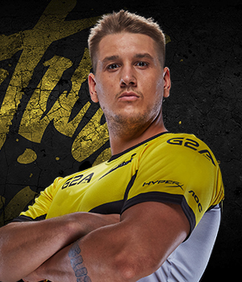

Возраст: 28Начал играть в 2002 году в составе широко известной в узких кругах команды Arsenal. С 2004 года вместе с Edward`ом играл в легендарной команде pro100. С 2007 года был приглашен в Virtus.pro, в составе которой успел объездить практически всю Россию. Турниры серии Asus Cup покорялись ему ни много ни мало 9 раз.
Обладает исключительным пониманием игры и тактическим мышлением. Лучший капитан сезонов 2010-2011, под чьим руководством команда выиграла все самые значимые турниры. На протяжении всего 2011 года удавалось находить ключи ко многим великолепным соперникам: mTw, fnatic, SK-Gaming, Frag eXecutors и другим.
Обладает неисчерпаемым чувством юмора, создатель так называемого "Zeus style". Увлекается футболом и спортом в целом. Ходит в спортзал, что делает его самым сильным в команде. Именно поэтому его слушаются остальные тиммейты.
SSD: HyperX Savage SSD 240 GB
Память: HyperX Savage DDR4 GB
USB: HyperX FURY64 GB
Монитор: AOC g2460Pqu